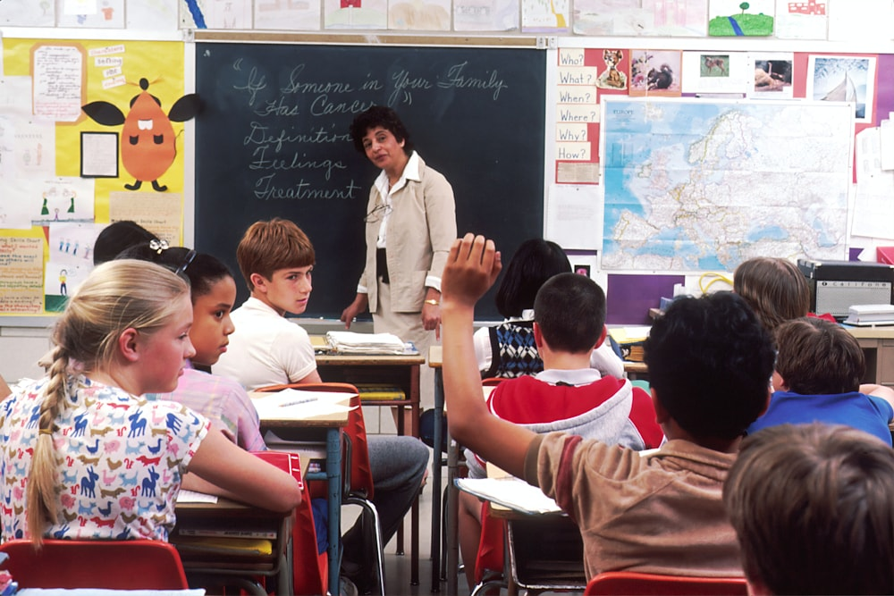

VIETNAM
VIETNAM THAILAND
THAILAND INDONESIA
INDONESIA

2026.05.07
平和学習としてのカンボジア研修で大切にしたい視点
歴史理解と現代社会の課題をつなげるための事前学習の考え方を紹介します。
続きを読むFor Teachers
旅行先を決める前に、学校の教育目標、生徒の関心、現地社会との接点を整理します。APEXは、教育旅行を「見る体験」から「考え、行動する学び」へ変えるための設計を支援します。
社会情勢、訪問候補、安全面を学校向けに整理します。
平和、環境、多文化共生などのテーマから逆算します。
説明に必要な観点や現地理解のポイントを整えます。
旅程と授業、振り返りを一体で考えます。
事前学習から現地での観察視点まで設計します。
What We Do
APEXは手配そのものではなく、教育目的の整理、現地理解、学習設計を担います。学校と旅行会社、現地パートナーの間で、学びの軸がぶれないよう支援します。
対象学年、時期、テーマに合わせた研修構成を検討します。
各国の社会、教育、訪問先候補、安全面の情報を整理します。
生徒が問いを持って現地に向かうための授業素材を整えます。
教育テーマに合う団体、学校、企業、地域活動を検討します。
先生方が共有しやすい現地理解のポイントを提供します。
体験を発表、レポート、探究活動へつなげます。
Mission
教育の現場と世界をつなぎ、生徒たちが社会の多様性と未来の可能性に出会う機会をつくる。
海外教育旅行は、単なる訪問体験ではありません。生徒が自分の問いを持ち、現地の人々や社会への理解を深め、帰国後の学びへつなげるための教育機会です。
私たちについて
Process
Articles
最新記事は固定コンテンツとして掲載しています。更新時はこのHTML内の記事カードを書き換えてください。
Contact
渡航国が未定でも構いません。学校の教育目的や生徒に届けたい学びを伺いながら、必要な情報を整理します。